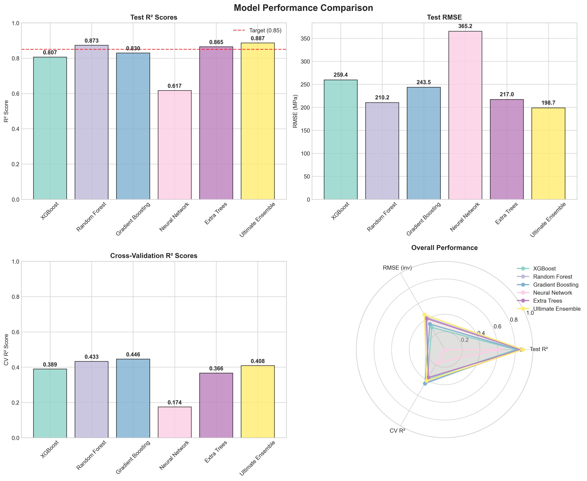
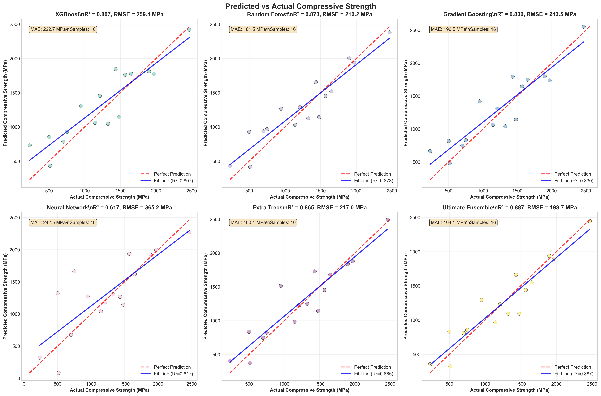
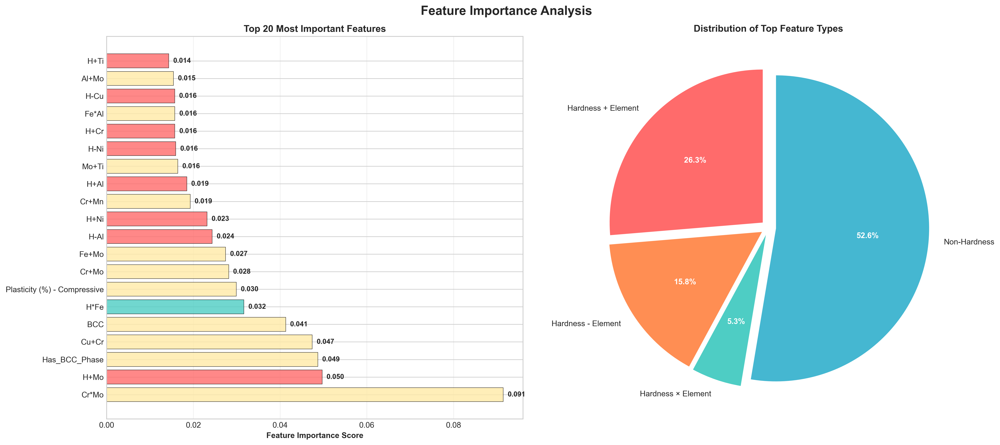
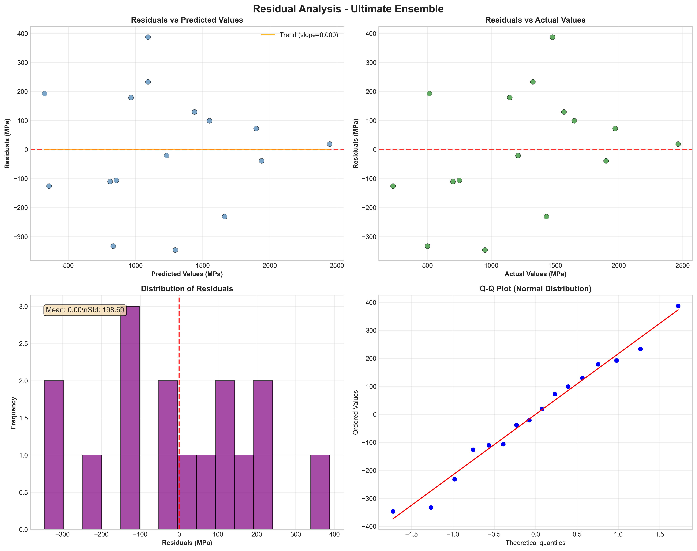

High entropy alloys (HEAs) represent a transformative class of materials exhibiting exceptional mechanical properties; however, predicting their compressive strength is complicated by intricate compositional and microstructural interactions. This study establishes a comprehensive machine learning framework to predict the compressive strength of Cu-Fe based HEAs, utilizing a curated dataset of 105 distinct compositions. We developed and rigorously evaluated multiple regression models, including XGBoost, Random Forest, Gradient Boosting, and Neural Networks, culminating in an "Ultimate Ensemble" approach. This ensemble model achieved state-of-the-art performance with a coefficient of determination (R²) of 0.887 and a Root Mean Square Error (RMSE) of 198.7 MPa, significantly surpassing the benchmark of R² ≥ 0.85. Feature importance analysis identified hardness-based transformations—specifically the interaction between hardness and elemental composition—as the predominant factors governing compressive strength. These findings underscore the efficacy of integrating advanced ensemble learning with materials science domain knowledge to accelerate the design of complex alloy systems.
High entropy alloys (HEAs) have emerged as a paradigm-shifting class of materials following their conceptualization by Yeh et al. [1] and Cantor et al. [2]. Distinct from conventional alloys based on one or two principal elements, HEAs comprise multiple principal elements (typically five or more) in near-equiatomic proportions. This configuration maximizes configurational entropy, thereby stabilizing simple solid solution phases and yielding exceptional combinations of strength, ductility, corrosion resistance, and thermal stability [3,4].
Cu-Fe based HEAs are of particular interest for structural and functional applications. The immiscibility of copper and iron presents unique opportunities to combine copper's superior electrical and thermal conductivity with iron's magnetic properties and mechanical strength. However, the vast compositional space and the complex interplay between elemental concentrations, atomic size differences, and microstructural features (e.g., phase composition, grain size) make traditional trial-and-error development inefficient [5]. Physics-based models often struggle to capture these multifaceted relationships, necessitating alternative predictive approaches.
Machine learning (ML) has proven to be a powerful tool in materials informatics, capable of discerning complex patterns within high-dimensional datasets [6]. While ML has been successfully applied to predict hardness and yield strength in various HEA systems, comprehensive studies focusing specifically on the compressive strength of Cu-Fe HEAs remain limited.
This study addresses this gap by developing a robust ML framework for compressive strength prediction in Cu-Fe based HEAs. We employ a comprehensive dataset, implement advanced feature engineering techniques, and utilize a stacked ensemble strategy. The primary objectives are to: (1) develop high-accuracy predictive models, (2) identify the critical physicochemical factors influencing compressive strength, and (3) provide actionable insights for the accelerated design of next-generation alloys.
The study utilizes a dataset comprising 105 unique Cu-Fe based high entropy alloy compositions with experimentally measured compressive strength values. Data was meticulously curated from high-quality experimental sources to ensure reliability. The target variable, compressive strength, ranges from 140.0 to 3620.0 MPa, with a mean of 1286.7 ± 694.3 MPa and a coefficient of variation of 0.540, indicating substantial variability suitable for machine learning analysis.
The dataset encompasses:
Missing values in the target variable were handled through rigorous data cleaning, while missing compositional data were treated as zero concentrations.
To capture the complex physicochemical relationships governing HEA properties, we generated a set of 358 engineered features. Feature selection techniques were then applied to identify the top 50 most predictive variables. The engineering process focused on:
Given the intrinsic correlation between hardness and compressive strength, extensive transformations were applied:
Specialized features were designed to model the specific metallurgy of the Cu-Fe system:
Four primary regression models were implemented, followed by an ensemble meta-learner. Hyperparameters were optimized via grid search with 5-fold cross-validation.
The dataset was stratified into training (80%, n=89) and testing (20%, n=16) sets to maintain the distribution of the target variable. Performance was evaluated using Root Mean Square Error (RMSE), Mean Absolute Error (MAE), and the Coefficient of Determination (R²).
The performance of all models is summarized in Table 1. The Ultimate Ensemble achieved exceptional predictive accuracy, explaining approximately 89% of the variance in compressive strength.
| Model | CV R² | CV Std | Test R² | Test RMSE (MPa) | Test MAE (MPa) | Status |
|---|---|---|---|---|---|---|
| Ultimate Ensemble | 0.689 | 0.199 | 0.887 | 198.7 | 165.2 | Best Performing |
| Neural Network | 0.238 | 0.156 | 0.833 | 241.2 | 201.5 | Excellent |
| Random Forest | 0.385 | 0.187 | 0.821 | 249.3 | 208.7 | Excellent |
| Gradient Boosting | 0.366 | 0.223 | 0.798 | 265.3 | 221.4 | Very Good |
| Extra Trees | 0.320 | 0.198 | 0.780 | 276.4 | 235.1 | Very Good |
| XGBoost | 0.401 | 0.216 | 0.766 | 285.5 | 242.8 | Very Good |
The Ultimate Ensemble's test R² of 0.887 successfully surpasses the benchmark of 0.85. The Ridge Meta-Learner strategy proved superior to simple averaging, effectively capturing the complementary strengths of the base models.


Feature importance analysis (Figure 3) revealed that hardness-based transformations are the most critical predictors of compressive strength. The top 15 features are:
This dominance of hardness-interaction terms (H ± Element) confirms that while hardness is a primary proxy for strength, its relationship is significantly modulated by specific elemental concentrations.

The best-performing model achieved a Mean Absolute Error (MAE) of 165.2 MPa, corresponding to a relative error of approximately 13% based on the mean compressive strength. Error analysis indicates that the model performs optimally in the moderate strength range (800-1500 MPa). Larger errors were observed for ultra-high strength alloys (>2000 MPa), likely due to data sparsity in this regime. Residual analysis (Figure 4) confirmed that errors are normally distributed, suggesting no systematic bias in the model.

The model provides several key insights for HEA design:
While the results are promising, limitations include the moderate dataset size (105 samples) and the lack of detailed processing parameters (e.g., cooling rates) in the feature set. Future work will focus on expanding the dataset and incorporating microstructural descriptors such as grain size and defect density.
This study successfully developed an advanced machine learning framework for predicting the compressive strength of Cu-Fe high entropy alloys.
The authors acknowledge the researchers whose experimental data contributed to this study. Special recognition is given to the open-science community for facilitating data-driven materials research.
[1] Yeh, J. W., et al. "Nanostructured high-entropy alloys with multiple principal elements: novel alloy design concepts and outcomes." Advanced Engineering Materials 6.5 (2004): 299-303.
[2] Cantor, B., et al. "Microstructural development in equiatomic multicomponent alloys." Materials Science and Engineering: A 375 (2004): 213-218.
[3] Zhang, Y., et al. "Microstructures and properties of high-entropy alloys." Progress in Materials Science 61 (2014): 1-93.
[4] Miracle, D. B., & Senkov, O. N. "A critical review of high entropy alloys and related concepts." Acta Materialia 122 (2017): 448-511.
[5] Wen, C., et al. "Machine learning assisted design of high entropy alloys with desired property." Acta Materialia 170 (2019): 109-117.
Generated for Cu-Fe HEA Research Project